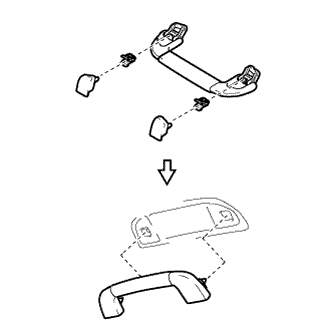

DOOR CONTROL RECEIVER > INSTALLATION |
| 1. INSTALL DOOR CONTROL RECEIVER |
Install the receiver with the bolt.
Connect the connector.
| 2. INSTALL REAR QUARTER TRIM PANEL ASSEMBLY LH |
Attach the 4 clips and 2 guides and pass the rear No. 2 seat outer belt floor anchor through the rear quarter trim panel.
Connect the connector.
Attach the 7 clips and 2 guides to install the rear quarter trim panel.
| 3. INSTALL DECK TRIM SIDE PANEL ASSEMBLY LH |
Connect each connector.
Attach the 3 clips and 8 claws to install the deck trim side panel.
Install the 2 bolts and 2 screws.
Install the rear No. 2 seat outer belt floor anchor with the bolt.
Install the rear No. 1 seat outer belt floor anchor with the bolt.
| 4. INSTALL ASSIST GRIP SUB-ASSEMBLY |
|  |
Assemble the assist grip, 2 clips and 2 covers as shown in the illustration.
Install the assist grip.
| 5. INSTALL ASSIST GRIP PLUG |
Attach the 2 claws to install the assist grip plug.
| 6. INSTALL FRONT DECK SIDE TRIM COVER (w/ Tonneau Cover) |
Attach the 2 claws to install the front deck side trim cover
| 7. INSTALL NO. 1 TONNEAU COVER HOLDER CAP (w/o Tonneau Cover) |
Attach the 2 claws to install the No. 1 tonneau cover holder cap.
| 8. INSTALL NO. 1 LUGGAGE COMPARTMENT TRIM HOOK |
Insert the No. 1 luggage compartment trim hook with the hook oriented horizontally to install it.
| 9. INSTALL REAR NO. 1 SEAT OUTER LAP BELT ANCHOR COVER |
Attach the 3 claws to install the rear No. 1 seat outer lap belt anchor cover.
| 10. INSTALL TONNEAU COVER ASSEMBLY (w/ Tonneau Cover) |
Install the tonneau cover.
| 11. INSTALL REAR DOOR OPENING TRIM WEATHERSTRIP LH |
 |
Align the paint mark on the rear door opening trim weatherstrip with the mark position on the vehicle and install the rear door opening trim weatherstrip as shown in the illustration.
| *1 | Paint Mark |
| *2 | Mark Position |
| 12. INSTALL REAR DOOR SCUFF PLATE LH |
Attach the 3 clips, 6 claws and 2 guides to install the rear door scuff plate.
| 13. INSTALL QUARTER SCUFF PLATE LH |
Install the quarter scuff plate with the 2 bolts.
| 14. INSTALL REAR NO. 1 FLOOR STEP COVER |
Attach the 2 claws to install the rear No. 1 floor step cover.
| 15. INSTALL REAR NO. 1 SEAT ASSEMBLY |
for 60/40 Split Slide Walk-in Seat Type LH Side:
Install the rear No. 1 seat assembly (Click here).
for 60/40 Split Slide Walk-in Seat Type RH Side:
Install the rear No. 1 seat assembly (Click here).
| 16. INSTALL REAR NO. 2 SEAT ASSEMBLY |
Install the rear No. 2 seat assembly (Click here).
| 17. CONNECT CABLE TO NEGATIVE BATTERY TERMINAL |